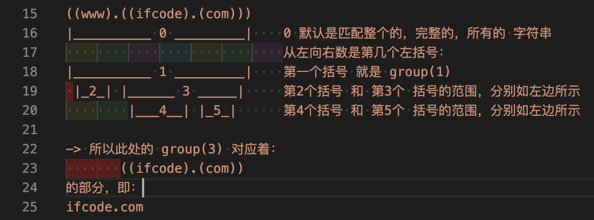

如何计算re中的group
问题
答案
- reGroupNumberDemo.py
# Function: 解释如何计算Python中正则re的group的编号
# Author: Crifan Li
# Update: 20201215
"""
Q:
正则表达式问题-CSDN论坛
https://bbs.csdn.net/topics/398537401
简答：选 A = ifcode.com
详解：
((www).((ifcode).(com)))
|__________ 0 _________| 0 默认是匹配整个的，完整的，所有的 字符串
从左向右数是第几个左括号：
|__________ 1 _________| 第一个括号 就是 group(1)
|_2_| |______ 3 _____| 第2个括号 和 第3个 括号的范围，分别如左边所示
|___4__| |_5_| 第4个括号 和 第5个 括号的范围，分别如左边所示
-> 所以此处的 group(3) 对应着：
((ifcode).(com))
的部分，即：
ifcode.com
点评：
出题者这么出，是想考你：
（1）是否知道 默认的 group(0)，始终表示是 全部匹配的结果，或者说 是否知道 group(0) 的存在
（2）考察你 group的计算规则，其实就是 从左向右右数，最低是1，每一个左括号 ( 就对应着该group的编号
深度评价：
其实，上图这种写法，是不好的写法
应该用name group 去写，逻辑更清楚
完整代码如下：
"""
import re
inputDomainStr = "www.crifan.com"
domainP = "(?P<wholeDomain>(?P<subDomain>www).(?P<hostOrg>(?P<host>crifan).(?P<org>com)))"
foundDomain = re.search(domainP, inputDomainStr)
if foundDomain:
wholeMatchStr = foundDomain.group(0)
print("wholeMatchStr=%s" % wholeMatchStr)
wholeDomain = foundDomain.group("wholeDomain")
print("wholeDomain=%s" % wholeDomain)
subDomain = foundDomain.group("subDomain")
print("subDomain=%s" % subDomain)
hostOrg = foundDomain.group("hostOrg")
print("hostOrg=%s" % hostOrg)
host = foundDomain.group("host")
print("host=%s" % host)
org = foundDomain.group("org")
print("org=%s" % org)
# wholeMatchStr=www.crifan.com
# wholeDomain=www.crifan.com
# subDomain=www
# hostOrg=crifan.com
# host=crifan
# org=com
print("="*80)
"""
进一步的优化：
（1）点
上面的点 . 其实是能匹配到任意字符，而不仅仅是 点 本身，而此处本意是 只匹配点本身，所以应该优化为 \.
（2）匹配更多域名
如果要匹配其他更多域名，比如：
book.crifan.com
www.crifan.org
等情况，则可以用如下代码：
"""
InputDomainList = [
"www.crifan.com",
"book.crifan.com",
"wiki.crifan.com",
"www.crifan.net",
"www.crifan.org",
]
for curIdx, eachDomainStr in enumerate(InputDomainList):
print("%s %s %s" % ("-"*20, curIdx, "-"*20))
print("eachDomainStr=%s" % eachDomainStr)
multiDomainP = "(?P<wholeDomain>(?P<subDomain>\w+)\.(?P<hostOrg>(?P<host>\w+)\.(?P<org>\w+)))"
foundMultiDomain = re.search(multiDomainP, eachDomainStr)
if foundMultiDomain:
curWholeMatchStr = foundMultiDomain.group(0)
print("curWholeMatchStr=%s" % curWholeMatchStr)
curWholeDomain = foundMultiDomain.group("wholeDomain")
print("curWholeDomain=%s" % curWholeDomain)
curSubDomain = foundMultiDomain.group("subDomain")
print("curSubDomain=%s" % curSubDomain)
curHostOrg = foundMultiDomain.group("hostOrg")
print("curHostOrg=%s" % curHostOrg)
curHost = foundMultiDomain.group("host")
print("curHost=%s" % curHost)
curOrg = foundMultiDomain.group("org")
print("curOrg=%s" % curOrg)
# -------------------- 0 --------------------
# eachDomainStr=www.crifan.com
# curWholeMatchStr=www.crifan.com
# curWholeDomain=www.crifan.com
# curSubDomain=www
# curHostOrg=crifan.com
# curHost=crifan
# curOrg=com
# -------------------- 1 --------------------
# eachDomainStr=book.crifan.com
# curWholeMatchStr=book.crifan.com
# curWholeDomain=book.crifan.com
# curSubDomain=book
# curHostOrg=crifan.com
# curHost=crifan
# curOrg=com
# -------------------- 2 --------------------
# eachDomainStr=wiki.crifan.com
# curWholeMatchStr=wiki.crifan.com
# curWholeDomain=wiki.crifan.com
# curSubDomain=wiki
# curHostOrg=crifan.com
# curHost=crifan
# curOrg=com
# -------------------- 3 --------------------
# eachDomainStr=www.crifan.net
# curWholeMatchStr=www.crifan.net
# curWholeDomain=www.crifan.net
# curSubDomain=www
# curHostOrg=crifan.net
# curHost=crifan
# curOrg=net
# -------------------- 4 --------------------
# eachDomainStr=www.crifan.org
# curWholeMatchStr=www.crifan.org
# curWholeDomain=www.crifan.org
# curSubDomain=www
# curHostOrg=crifan.org
# curHost=crifan
# curOrg=org

另外，可以借助工具查看具体细节，详见：